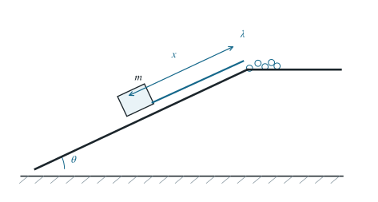

P0061 · 出版物习题 · 原书第 1.26 题
物块牵引变长软绳沿斜面下滑
物块沿无摩擦斜面下滑时逐段拉动绳堆，求质量持续增加的运动体系的速度。
1 题目
1.1 物理情境
质量为 的小物块位于倾角 的光滑长斜面上。一根柔软、均匀且不可伸长的绳子，一端系在物块上，其余绳段静止堆在斜面顶端。绳的线密度为 。
1.2 物理过程
物块由静止释放，沿斜面向下运动距离 。此时长为 的绳段被拉直，连同物块以共同速度 下滑；后续绳段仍留在顶端的绳堆中。
1.3 已知参数和理想化假设
绳堆足够大，使所研究的阶段还未拉尽；斜面与绳均无摩擦。每一小段绳在被拉入运动部分之前的地面参考系速度为零；绳段并入过程可有内耗，故不能直接假设机械能守恒。
1.4 求解目标
求运动距离为 时物块的速度 。

沿斜面自绳堆向下取正方向； 同时是物块位移和已拉动的绳长。
2 思路与提示
正在运动的物块与绳段总质量随位移增加。对这部分写动量方程，再用位移导数代替时间导数积分。
3 解答展开 / 收起
3.1 确定运动部分及其质量
物块和已经绷直的绳段共速，构成动量为 的运动部分。其质量随物块位移增加：
加入此部分的新绳段原先静止，所以其输入动量为零。沿斜面的外力合量为整个运动部分的重力分量 。
3.2 对变质量运动部分写动量方程
动量流入项为零，故沿坡向下的动量定理为
又有 。在 的运动阶段，链式法则给出
3.3 积分并恢复速度
从释放点积分，左边是 。右边需积分随位置变化的质量平方。令 ，则 ，上下限是 与 ，所以 ，得到
由 且运动方向向下，所求速度为
该式只适用于绳尚未拉尽。检验 时，分子展开为 ；除以外面的 和趋于 的质量平方，得到 。对于远长于 的运动绳段，领先阶则为 。
4 方法与讨论
动量方程展开为 。动能导数是 。第一项是重力功率，第二项是新绳段突然并入造成的机械能损失率；由 ，它等于 。这解释了为何光滑斜面仍不能直接使用机械能守恒。